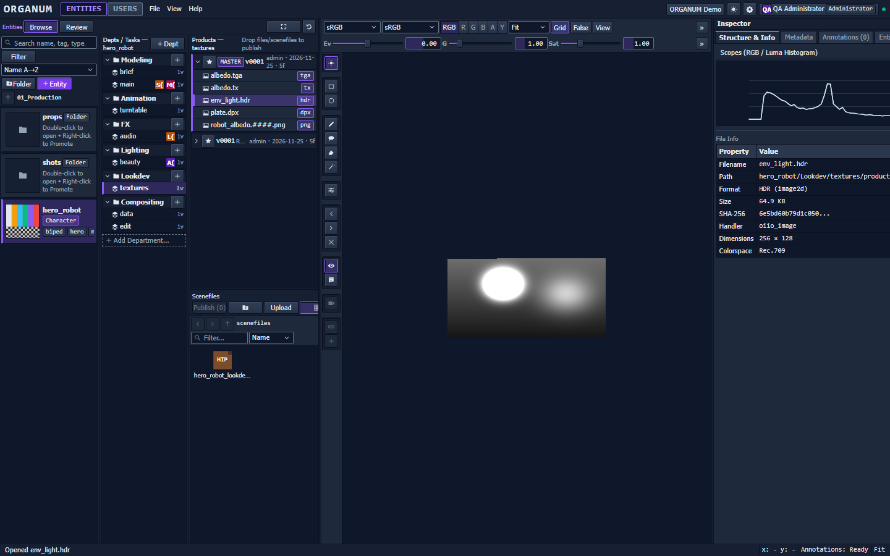
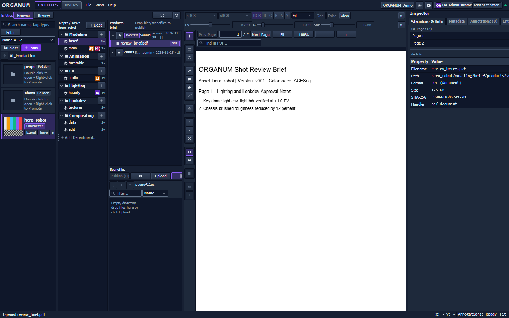
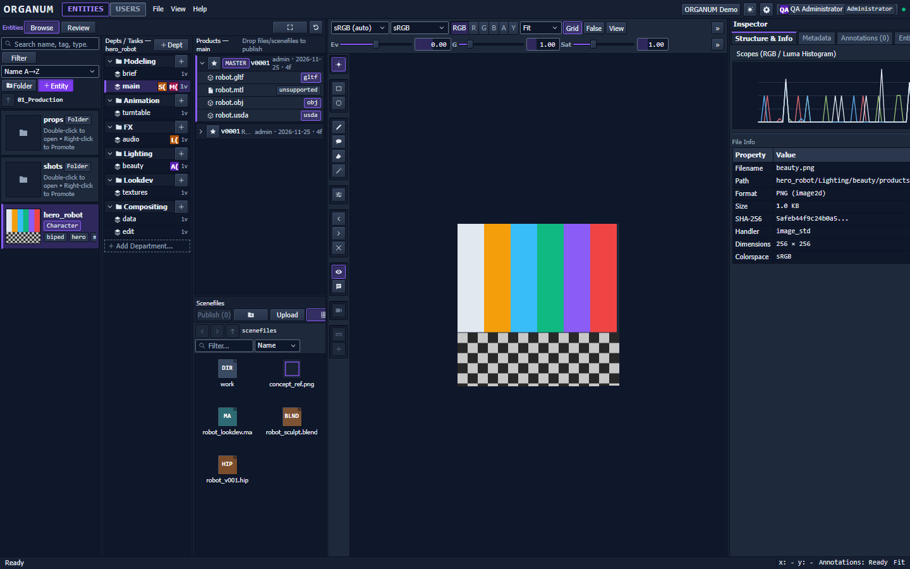
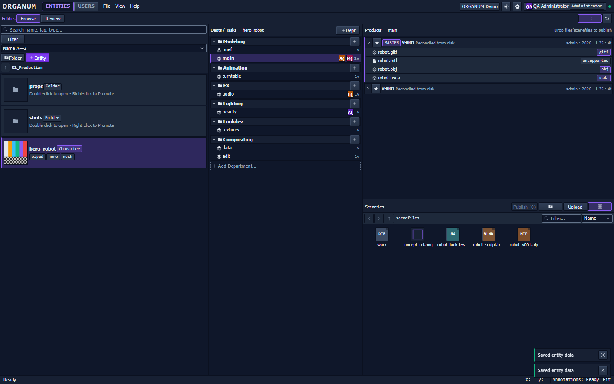
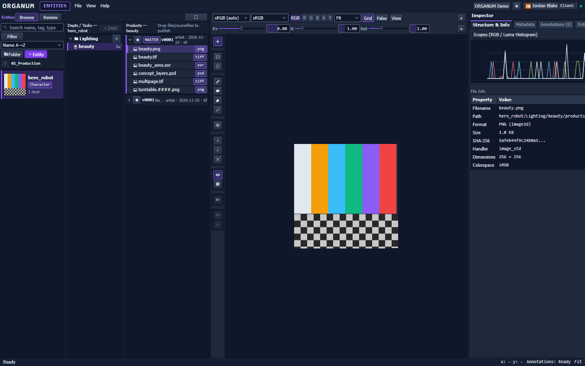
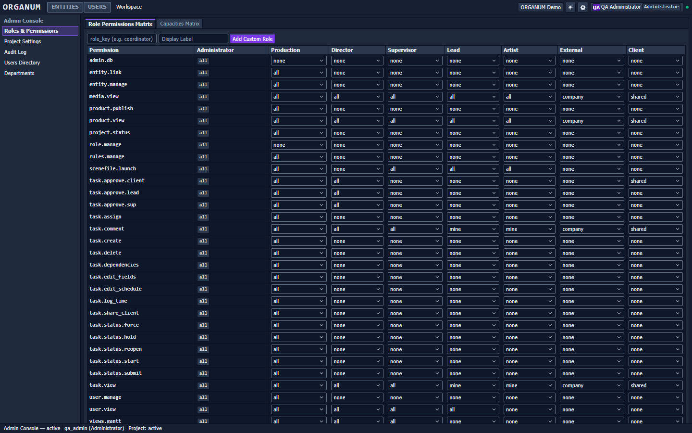

ORGANUM opens the files your team actually makes — EXRs, PSDs, USD, video, audio, PDFs — and tracks every version, note and sign-off next to them. It runs on your own machine, and every project is just a folder on your disk.
WTG to APP, enforced by the serverOn most productions the work is in one place, the feedback in another, and the status of each shot lives in someone's head. ORGANUM brings the three together.
vNNNN, with one clear MASTER.ORGANUM follows the way a studio already organises its files. The folder structure is the project, so nothing gets locked away in a proprietary database.
Create entities — a character, a prop, a shot — and give each one departments (Modeling, Lookdev, Lighting…) and tasks. ORGANUM creates the matching folders on disk and keeps them in sync.
Artists keep their working scenes in a free scenefiles/ area, opened straight into Houdini, Maya, Blender or Nuke with a double-click. When something is ready, they drag it in to publish an immutable version: v0001, v0002…
Any version opens in the viewer with accurate colour, zoom down to the pixel, layers and AOVs. Reviewers draw notes on the image, on the timeline or in 3D space.
Submit sends the task through Lead, Supervisor and Client review. Approving it marks the approved version and unlocks the downstream tasks that were waiting on it.
ORGANUM_Demo/ ├─ 00_Pipeline/ │ ├─ project.db # this project's database │ ├─ project.json │ ├─ cache/ # previews, proxies, thumbnails │ └─ trash/ # nothing is hard-deleted └─ 01_Production/ └─ hero_robot/ # entity └─ Lighting/ # department └─ beauty/ # task ├─ products/ │ ├─ v0001/ │ ├─ v0002/ │ └─ master.json ★ MASTER └─ scenefiles/ ├─ lighting_v001.hip └─ comp_slap.nk
Copy, archive or back up the folder and the whole project goes with it. If someone moves or renames folders outside ORGANUM, Reconcile finds them again by their ID.
ORGANUM decodes files on its own server and shows them in the browser through one shared colour pipeline, so a render, a video frame and a frozen 3D view all respond to exposure and gamma in the same way.


The same app that shows the work also tracks it. Status, versions, dependencies and workload all come from the actions people already take: publishing, submitting and approving.
Three columns from left to right: entities (with thumbnails, types and tags), their departments and tasks, and the task's published versions with the scene files below them.
Search by name, tag or type. Right-click to rename, promote, set a thumbnail or move to trash. Drag files from your desktop onto a task to publish them. Scene files update live while artists save.
Two layouts: Browse gives the browser more room; Review gives it to the viewer. Ctrl+E maximises the browser.

Each task has one product. Every publish copies the files into a new, read-only version folder — v0001, v0002… — so earlier work is never overwritten.
The first version is automatically starred as MASTER. After that, the star only moves when someone deliberately moves it, so “which one is final?” always has a single answer, also written to master.json on disk.
Deleting moves things to the project's trash/ folder instead of erasing them.

This is the same set of rules the ORGANUM server applies. Turn review stages on or off for the task, then move it through the workflow.
Link tasks across entities — for example, Lighting waits for Lookdev. A waiting task becomes Ready automatically once everything upstream is approved or published. Loops are rejected.
Record that glasses is used in hero_robot, which appears in sh010. ORGANUM then suggests the task dependencies those links imply, for a producer to confirm.
Bid hours, logged time and scheduled dates become a day-by-day load per artist. Tasks without dates or an assigned artist are listed so nothing falls through.
Permissions work on two levels: a person's role in the project, and their capacity on a specific task. An artist assigned to a task can publish on it without having rights everywhere else.
| Role | Sees | Can approve |
|---|---|---|
| Administrator | everything | all stages |
| Production | everything | on behalf of client |
| Director | all tasks | lead · sup · client |
| Supervisor | all tasks | when assigned |
| Lead | own tasks + all media | when assigned |
| Artist | own tasks + all media | — |
| External | own company | — |
| Client | shared versions only | client stage |

Lighting/beauty v0001 is visible.Every note is either internal or client. The team talks freely in internal notes; clients only ever see client notes and the versions shared with them. Anything not shared simply doesn't exist for them.

ORGANUM is built around the people in a production, not around a file format. Here's what changes for each of them.
Status, retakes and workload are calculated from what actually happened, not reported by hand. Waiting tasks unlock themselves.
Review any department's output in one viewer with correct colour, then approve or send a retake with notes on the frame.
Open scene files in Houdini, Maya, Blender or Nuke with a double-click, publish by drag and drop, and read feedback where it was drawn.
A clean review space with only the versions meant for them, and a clear place to approve or comment.
No cloud account, no uploads to a third party. Each project carries its own database inside its own folder.
A compact interface in the tradition of desktop DCC tools: full keyboard control, no animations slowing things down, dark and light themes.
Each format is a self-contained plug-in on the server and a viewer module in the browser, so new formats can be added without touching existing ones.
A Python server reads and converts the files; a React app shows them. Converted previews are cached by content, so the same file is only processed once.
Quality checks in the repository: strict typing on both sides (mypy, TypeScript), Ruff, ESLint and Stylelint rules that enforce the design tokens, colour-contrast checks, unit tests and Playwright end-to-end tests. All third-party libraries were chosen for permissive licences.
On Windows, one double-click installs what's missing, creates a demo project and starts everything.
:: needs uv and Node.js 22+ on PATH > launch.bat ORGANUM Frontend : http://127.0.0.1:5173 ORGANUM Backend : http://127.0.0.1:8000/docs
# backend $ cd backend $ uv sync --python 3.12 --all-extras $ uv run python scripts/make_demo_data.py $ uv run uvicorn app.main:app --port 8000 # frontend $ cd frontend $ npm install $ npm run dev
| User | Role |
|---|---|
| prod_maya | Production |
| dir_alex | Director |
| sup_elena | Supervisor |
| lead_marco | Lead |
| art_sam | Artist |
| ext_li | External (Outsource FX Co) |
| cli_jordan | Client (Client Studio) |
Demo password: DemoPass123!. The admin account must change its password on first login.
Good to know: keep the active project on a local SSD rather than a network share — the project database doesn't like network file locking. Copy the folder to the network for archiving.
Click any screen to open it full size. Use the arrow keys to move between them.